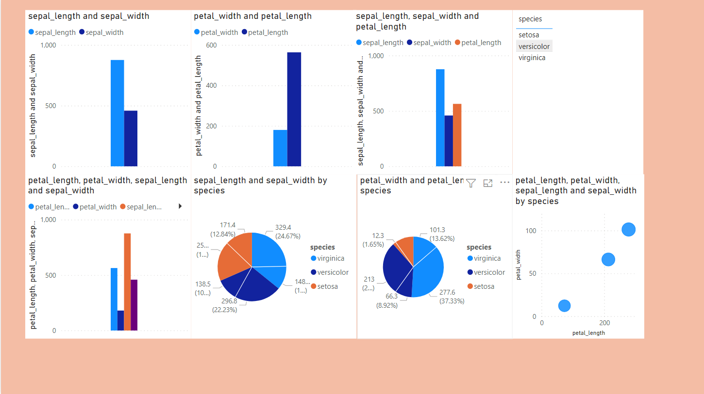

Plant Trees
Save Earth
“Flowers always make people better, happier and more helpful; they are sunshine, food and medicine for the soul.”
More info“Flowers always make people better, happier and more helpful; they are sunshine, food and medicine for the soul.”
More infoDid you know flowers are scientifically proven to provide a moment of calm? Research from the University of North Florida’s Department of Public Health shows that living with flowers significantly reduces our stress. That is good news considering 68 percent of people report experiencing stress weekly and 32 percent feel stress daily. A simple solution to help relieve your stress is to have flowers on your nightstand to see when you first wake up, on your desk to provide a breath of fresh air while you work, or on your kitchen counter or coffee table to help you unwind after a hectic day. Flowers do wonders for your well-being, increasing happiness, workplace productivity, decreasing worry and anxiety, and more.
This dashboard is done using a software called PowerBI which is a product of Microsoft. Here I have just attached the images of the dashboard because PowerBI needs oraganizational account. So to see the visualizations interactive I am attaching my PowerBI dashboard file. This requires PowerBI software to open the file. The usage of dashboards like these is to bring a better understanding about the dataset and also to bring some beautiful insights
Hi, I'm Rishi, a Data Scientist 🚀 from India. Currently, I'm learning ML, DL, CV & NLP. I have an experience as a Data Science Intern in a company called TreeSoft Solutions situated at Hyderabad for around three months. Now currently I am trying to do some self - paced projects in data science like Rainy Brain, Smart Attendance System, J.A.R.V.I.S, etc.. I also have experience of taking webinars in my college. I am also trying to do some projects for my college too. Always curious to learn something new in the field of Data Science. Beside's programming, I enjoy playing games and watching youtube. Below I have given my social media links. Happy to have new connections.